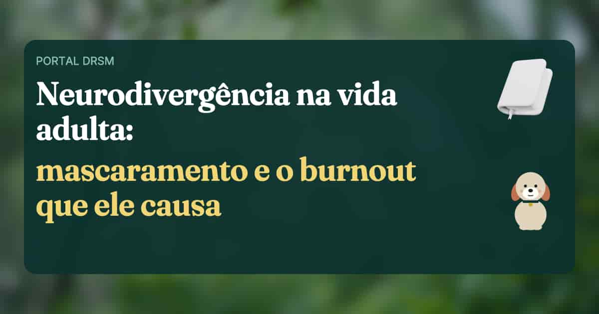

Neurodivergência na vida adulta: mascaramento e o burnout que ele causa

Narração gerada por inteligência artificial, sob responsabilidade do Dr. Antônio Felipe. O áudio só carrega ao clicar.
Mascaramento (camouflaging) é o esforço, consciente ou automático, de esconder ou compensar traços de neurodivergência — como TDAH ou TEA — para se encaixar em expectativas sociais e profissionais. Para muitos adultos, esse esforço começou tão cedo e se tornou tão automático que nem é percebido como esforço — até que o desgaste acumulado vira burnout.
O que é mascaramento, na prática
Forçar contato visual quando ele é desconfortável, ensaiar conversas antes que aconteçam, suprimir estimulação (stimming) em público, fingir entender referências sociais que não fazem sentido — tudo isso é trabalho cognitivo e emocional contínuo, feito por baixo de uma interação que, para quem observa de fora, parece natural.
Num estudo com 92 adultos autistas, o mascaramento foi descrito como estratégia para se encaixar, com consequências como exaustão e prejuízo à própria identidade1.
O burnout que o mascaramento causa
Sustentar essa performance por anos, especialmente sem saber nomear o que está acontecendo, tende a levar a um esgotamento específico: exaustão que não passa com descanso comum, perda de habilidades que antes eram automáticas, e uma sensação de "não aguentar mais atuar" — mesmo em contextos que a pessoa genuinamente valoriza, como o trabalho ou relações próximas.
Muitos adultos autistas só recebem o diagnóstico tarde, depois de anos de sofrimento sem nome2. O TDAH também persiste na vida adulta em parte das pessoas3.
Reduzir a máscara, não a identidade
Identificar em quais contextos o mascaramento é mais custoso, e onde há espaço — mesmo pequeno — para reduzir esse esforço, ajuda a recuperar energia. Isso pode incluir desde ajustes sensoriais simples até conversas abertas com pessoas de confiança sobre o que realmente ajuda. Avaliação profissional pode esclarecer se há uma condição de base a ser nomeada e apoiada — mas o desgaste do mascaramento é real e válido, com ou sem diagnóstico formal.
Conteúdo educativo baseado em literatura sobre mascaramento (camouflaging) e burnout em adultos neurodivergentes. Não substitui avaliação individual.
No trabalho, adultos autistas relatam que ajustes simples e ambientes compreensivos fazem diferença4.
Ferramenta interativa
Termômetro de Burnout por Mascaramento
Seis afirmações sobre o esforço de "parecer neurotípico" no dia a dia, escala de 1 (nunca) a 5 (quase sempre). Não avalia se você é neurodivergente — avalia o desgaste de mascarar.
Ferramenta educativa de autoavaliação. Não substitui consulta, diagnóstico ou acompanhamento por profissional habilitado.
Referências
- Hull L, Petrides KV, Allison C, et al. "Putting on My Best Normal": Social Camouflaging in Adults with Autism Spectrum Conditions. J Autism Dev Disord. 2017;47(8):2519-2534. doi:10.1007/s10803-017-3166-5
- Lai MC, Baron-Cohen S. Identifying the lost generation of adults with autism spectrum conditions. Lancet Psychiatry. 2015;2(11):1013-27. doi:10.1016/S2215-0366(15)00277-1
- Song P, Zha M, Yang Q, et al. The prevalence of adult attention-deficit hyperactivity disorder: A global systematic review and meta-analysis. J Glob Health. 2021;11:04009. doi:10.7189/jogh.11.04009
- Thorpe D, McKinlay M, Richards J, et al. The Lived Experience of Autistic Adults in Employment: A Systematic Search and Synthesis. Autism Adulthood. 2024;6(4):495-509. doi:10.1089/aut.2022.0114